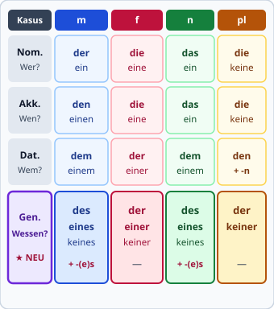

Medienübersicht
Alle Bilder, Audios und Videos dieser App mit ihrer Quelle und ihrer Lizenz.
Bilder

images/case-table-ch1.svg© CC0-1.0Verwendet auf: Artikel und Genus

images/case-table-ch2.svg© CC0-1.0Verwendet auf: Akkusativ und Artikel

images/case-table-ch3.svg© CC0-1.0Verwendet auf: Dativ und Artikel

images/standin-pronouns.svg© CC0-1.0Verwendet auf: Personalpronomen im Dativ

images/dative-accusative-arrows.svg© CC0-1.0Verwendet auf: Dativ- und Akkusativobjekt

images/case-table-ch4.svg© CC0-1.0Verwendet auf: Genitiv und Genitivpräpositionen

images/n-declension-card.svg© CC0-1.0Verwendet auf: Schwache maskuline Nomen (n-Deklination)